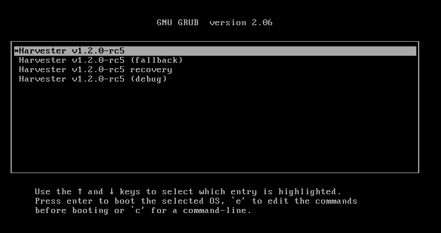
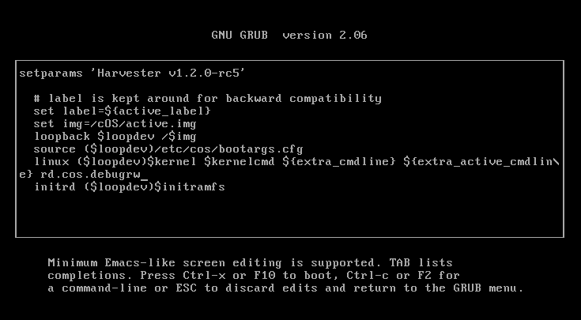
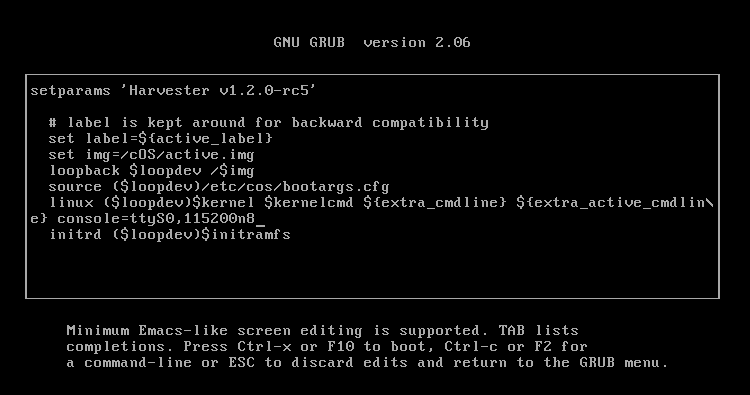
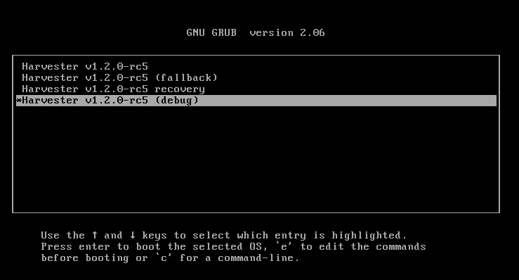

Betriebssystemprobleme
Der Harvester läuft auf einem OpenSUSE-basierten Betriebssystem. Das Betriebssystem ist ein Artefakt, das von dem elemental-toolkit erzeugt wurde. Die folgenden Abschnitte enthalten Informationen und Tipps, um Benutzern bei der Fehlersuche von betriebssystembezogenen Problemen zu helfen.
Wie man sich in einen Harvester-Knoten einloggt
Benutzer können sich mit dem Benutzernamen rancher und dem während der Installation bereitgestellten Passwort oder SSH-Schlüsselpaar in einen Harvester-Knoten einloggen.
Der Benutzer rancher kann privilegierte Befehle ausführen, ohne ein Passwort einzugeben:
# Run a privileged command rancher@node1:~> sudo blkid # Or become root rancher@node1:~> sudo -i node1:~ # blkid
Wie kann ich Pakete installieren? Warum sind einige Pfade schreibgeschützt?
Das Dateisystem des Betriebssystems ist, ähnlich wie ein Container-Image, bildbasiert und unveränderlich, außer in einigen Verzeichnissen.
Wir empfehlen, einen Toolbox-Container zu verwenden, um Programme, die nicht im Harvester-Betriebssystem verpackt sind, zu Debugging-Zwecken auszuführen. Bitte siehe diesen Artikel, um zu lernen, wie man einen Toolbox-Container erstellt und ausführt.
Das Harvester-Betriebssystem bietet auch eine Möglichkeit, den Lese- und Schreibzugriff vorübergehend zu aktivieren. Bitte folgen Sie den folgenden Schritten:
|
Das Aktivieren des Lese- und Schreibzugriffs könnte Ihr System beschädigen, wenn Dateien geändert werden. Bitte verwenden Sie es auf eigenes Risiko. |
-
Für die Version
v0.3.0müssen wir zunächst einen Workaround anwenden, um nach Aktivierung des Lese- und Schreibzugriffs einige Verzeichnisse vom Overlay auszunehmen. Führen Sie auf einem laufenden Harvester-Knoten den folgenden Befehl als Root aus:cat > /oem/91_hack.yaml <<'EOF' name: "Rootfs Layout Settings for debugrw" stages: rootfs: - if: 'grep -q root=LABEL=COS_STATE /proc/cmdline && grep -q rd.cos.debugrw /proc/cmdline' name: "Layout configuration for debugrw" environment_file: /run/cos/cos-layout.env environment: RW_PATHS: " " EOF -
Starten Sie das System neu, um zum GRUB-Menü zu gelangen. Drücken Sie ESC, um im Menü zu bleiben.

-
Drücken Sie
eim ersten Menüeintrag. Fügen Sierd.cos.debugrwzurlinux (loop0)$kernel $kernelcmdZeile hinzu. Drücken SieCtrl + x, um das System zu starten.
Wie man Kernel-Parameter dauerhaft bearbeitet.
|
Die folgenden Schritte sind eine Umgehungslösung. Harvester wird die Gemeinschaft informieren, sobald eine dauerhafte Lösung implementiert ist. |
-
Mounten Sie das Zustandsverzeichnis im Lese- und Schreibzugriffsmodus neu:
# blkid -L COS_STATE /dev/vda2 # mount -o remount,rw /dev/vda2 /run/initramfs/cos-state
-
Bearbeiten Sie die GRUB-Konfigurationsdatei und fügen Sie Parameter zur
linux (loop0)$kernel $kernelcmdZeile hinzu. Das folgende Beispiel fügt einennomodesetParameter hinzu:# vim /run/initramfs/cos-state/grub2/grub.cfg menuentry "${display_name}" --id cos { # label is kept around for backward compatibility set label=${active_label} set img=/cOS/active.img loopback $loopdev /$img source ($loopdev)/etc/cos/bootargs.cfg linux ($loopdev)$kernel $kernelcmd ${extra_cmdline} ${extra_active_cmdline} nomodeset initrd ($loopdev)$initramfs } -
Starten Sie neu, damit die Änderungen wirksam werden.
Wie man den Standard-GRUB-Bootmenüeintrag ändert.
Um den Standardeintrag zu ändern, überprüfen Sie zuerst das --id Attribut eines Menüeintrags. GRUB-Menüeinträge befinden sich in den folgenden Dateien:
-
/run/initramfs/cos-state/grub2/grub.cfg: Enthält die Standard-, Fallback- und Wiederherstellungseinträge. -
/run/initramfs/cos-state/grubcustom: Enthält den Debug-Eintrag.
Im folgenden Beispiel hat der Eintrag die ID debug.
# cat \
/run/initramfs/cos-state/grub2/grub.cfg \
/run/initramfs/cos-state/grubcustom
<...>
menuentry "${display_name} (debug)" --id debug {
search --no-floppy --set=root --label COS_STATE
set img=/cOS/active.img
set label=COS_ACTIVE
loopback loop0 /$img
set root=($root)
source (loop0)/etc/cos/bootargs.cfg
linux (loop0)$kernel $kernelcmd ${extra_cmdline} ${extra_passive_cmdline} ${crash_kernel_params}
initrd (loop0)$initramfs
}
Sie können den Standardeintrag konfigurieren, indem Sie die folgenden Befehle ausführen:
# mount -o remount,rw /run/initramfs/cos-state # grub2-editenv /run/initramfs/cos-state/grub_oem_env set saved_entry=debug
Falls erforderlich, können Sie die Änderung mit dem Befehl grub2-editenv /run/initramfs/cos-state/grub_oem_env unset saved_entry rückgängig machen.
Wie man einen Systemabsturz oder -hänger debuggt.
Sammeln Sie das Absturzprotokoll
Wenn Kernel-Panik-Spuren im Systemprotokoll nicht aufgezeichnet werden, wenn ein System abstürzt, ist eine zuverlässige Möglichkeit, das Absturzprotokoll zu finden, die Verwendung einer seriellen Konsole.
Um die Ausgabe von Kernel-Nachrichten an eine serielle Konsole zu aktivieren, verwenden Sie bitte die folgenden Schritte:
-
Starten Sie das System im GRUB-Menü. Drücken Sie ESC, um im Menü zu bleiben.
-
Drücken Sie
eim ersten Menüeintrag. Fügen Sieconsole=ttyS0,115200n8zurlinux (loop0)$kernel $kernelcmdZeile hinzu. Drücken SieCtrl + x, um das System zu starten.
Passen Sie die Konsoleinstellungen an Ihre Umgebung an. Stellen Sie sicher, dass Sie die
console=Zeichenfolge am Ende der Zeile anhängen. -
Verbinden Sie sich mit dem seriellen Port, um Protokolle zu erfassen.
Sammeln Sie Absturzabbilder
Für Kernel-Panik-Abstürze können Sie kdump verwenden, um Absturzabbilder zu sammeln.
Standardmäßig wird das Betriebssystem ohne aktivierte kdump-Funktion gestartet. Benutzer können die Funktion aktivieren, indem sie den debug Menüeintrag beim Booten auswählen, wie im folgenden Beispiel:

Wenn ein System abstürzt, wird ein Absturzabbild im /var/crash/<time> Verzeichnis gespeichert. Die Bereitstellung des Absturzabbilds an die Entwickler hilft ihnen, Probleme zu beheben und zu lösen.